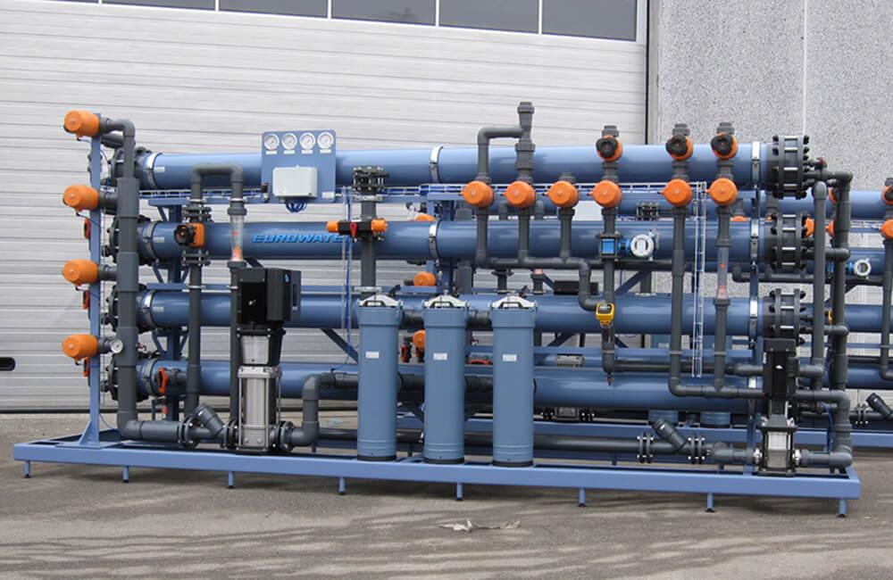
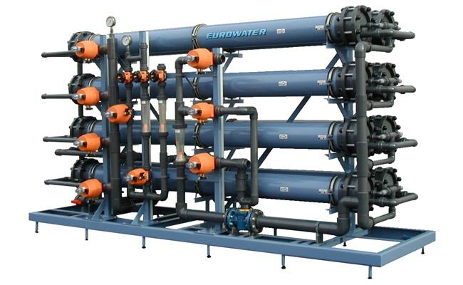
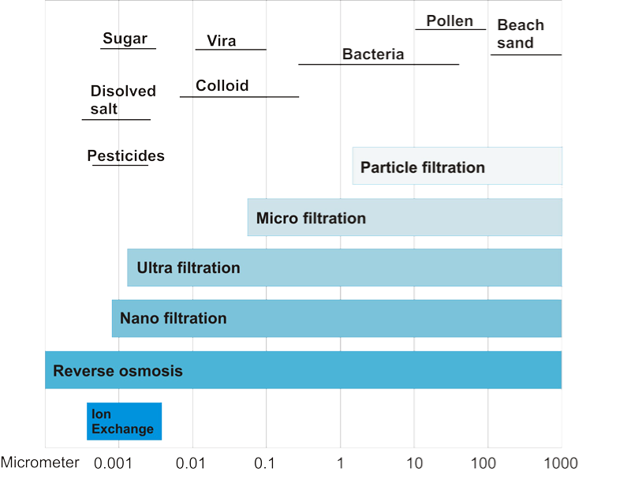
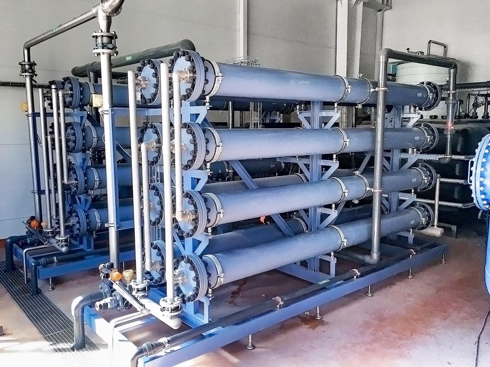

Нанофильтрация для умеренного удаления солей
Нанофильтрация — это мембранная технология, которая по принципу действия и конструкции очень похожа на обратный осмос. Мембрана для нанофильтрации в первую очередь удерживает двухвалентные ионы и более крупные молекулы. Что касается процесса фильтрации, то между обратным осмосом и ультрафильтрацией находится нанофильтрация.
Установки нанофильтрации могут удалять загрязнения, такие как бактерии, растворенные соли, пестициды и белки, размером до 0,001 микрона.
Применение установок нанофильтрации
Питьевая вода
Фильтрация сырой воды для уменьшения содержания сульфатов, хлоридов и фторидов.
Умягчение
Частичное умягчение питьевой воды без использования химических реагентов.
Техническая вода
Частичное умягчение и уменьшение цвета и гумуса поверхностных вод, например, металлургическая промышленность и бумажные фабрики.
Когда использовать нанофильтрацию
Создан специально для Ваших нужд
EUROWATER предлагает широкий ассортимент полностью автоматических установок нанофильтрации, основанных на нашей хорошо известной стандартной модульной системе. Это позволяет нам подобрать оптимальную установку для Ваших нужд.

Для получения более подробной информации свяжитесь с нами
Обратный осмос - это самый тонкий тип фильтрации с размером пор менее 1 нм и задержкой более 98% ионов. Типичное рабочее давление установки обратного осмоса, работающей на водопроводной воде, составляет 12-16 бар.
Нанофильтрация - это также очень тонкая фильтрация, но задержка ионов ниже по сравнению с обратным осмосом. Типичное рабочее давление установки нанофильтрации составляет 4-7 бар.

Референция
Нанофильтрация, используемая для ингредиентной воды
Ведущая компания по производству мороженого в Украине контролирует качество ингредиентной воды с помощью двух установок нанофильтрации.

Получите оптимальное решение
Выбор установки зависит от области применения, качества и расхода воды. Мы к Вашим услугам найти оптимальное решение на основе нашего ноу-хау. Заполните форму, и мы свяжемся с Вами.